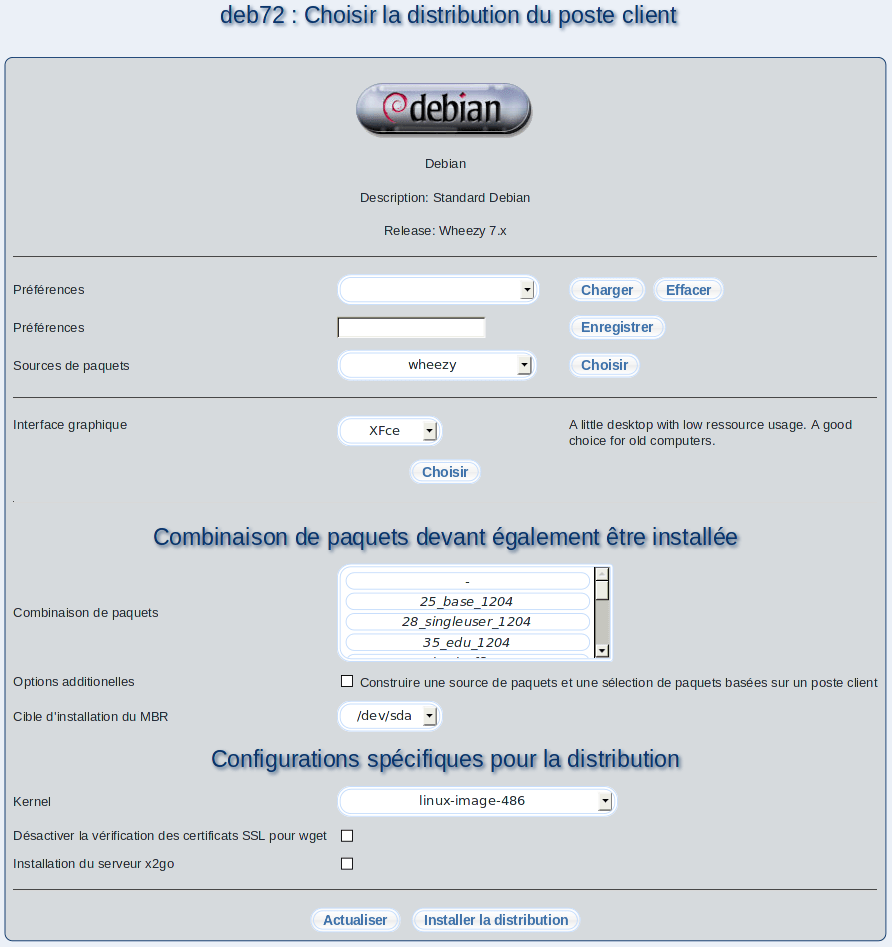

Cet écran rend possible l'installation de différentes distributions.
Une distribution est un ensemble cohérent de logiciels assemblés autour du noyau Linux; elle est fournie sur différents types de medias (CD, DVD, clé USB, internet). Il existent beaucoup des distributions libres, téléchargeables gratuitement sur internet. Par exemple, Debian qui est une distribution Linux libre. Les distributions diffèrent en général par les programmes d'installation employés et l'interface graphique du bureau. Dans la plupart des cas, le choix d'une distribution est seulement une question de goût.
- Charger des préférences: Sélectionnez une préférence préenregistrée et cliquez sur Charger.
- Effacer des préférences: Vous pouvez effacer la préférence sélectionnée en cliquant sur Effacer.
- Enregistrer des préférences: Vous pouvez enregistrer les préférences actuelles en saisissant un nom et cliquant sur Enregistrer.
- Sources de paquets: En premier lieu, vous devez sélectionner une source de paquets précedemment créée sous Paquets et Sources de paquets. En choisissant les sources des paquets, la distribution, la version et les interfaces graphiques disponibles seront fixés en même temps. Pour cela, cliquez sur Choisir. Puis, le logo de la distribution avec une description courte sera affiché en haut.
- Interface graphique: Dépendamment de la distribution sélectionnée, vous pouvez choisir parmis différentes interfaces graphiques (GUIs). Si vous préférez installer le poste client sans interface graphique, vous pouvez opter pour le mode texte (textmode).
- Combinaison de paquets: Vous pouvez sélectionner une combinaison de paquets, qui sera installée en même temps que le système d'exploitation.
- Cible d'installation du MBR: Le programme m23 tente de détecter le premier disque dur automatiquement pour y installer le chargeur d'amorçage. Si vous souhaitez utiliser un disque dur différent, vous pouvez le choisir ici. Gardez en mémoire que ce doit être un disque dur correspondant à un de ceux paramétrés dans la séquence de démarrage du BIOS.
- Configurations spécifiques pour la distribution: Chaque distribution peut définir une multitude d'options qui seront utilisé pour l'installation de celle-ci.
Finalement, cliquez sur Installer la distribution pour démarrer l'installation.
root
2018-05-08